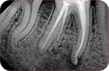

Gölcük Kocaeli’de bulunan kliniğimde Şubat 2020 yılından beri
tedavi hizmeti sunmaktayım. Dolgu, kanal tedavisi, diş beyazlatma,
diş temizliği, protez, diş çekimi, estetik dolgu,
zirkonyum/seramik kaplama ve diğer tedaviler için kaliteli bir
tedavi sunmayı hedefliyorum.
Gölcük Kocaeli’de bulunan kliniğimde Şubat 2020 yılından beri tedavi
hizmeti sunmaktayım. Dolgu, kanal tedavisi, diş beyazlatma, diş
temizliği, protez, diş çekimi, estetik dolgu, zirkonyum/seramik
kaplama ve diğer tedaviler için kaliteli bir tedavi sunmayı
hedefliyorum.
Hakkımızda
Diş Hekimi Ceren Dik Uçal, Bolu Abant İzzet Baysal Üniversitesi Diş
Hekimliği Fakültesinden 2016 yılında mezun olmuştur. 2016 yılından
beri Gölcük’te hastalarına hizmet vermektedir. Özel Ceren Dik Uçal
Muayenehanesi 2020 yılında kurulmuştur. Kurulduğu günden itibaren
hastalarına kaliteli ve güvenilir tedaviyi misyon edinmiştir.
Tedaviler
Kompozit Dolgu
Kompozit dolgu, diş çürüklerini veya hasarlarını doğal diş
rengine uygun bir reçine malzemesiyle onaran estetik ve etkili
bir tedavi yöntemidir.
Kanal Tedavisi

Kanal tedavisi, dişin iç kısmındaki enfekte veya hasarlı doku
ve sinirleri temizleyip ardından dolgu ile doldurarak dişin
korunmasını sağlayan bir tedavi yöntemidir.
Diş Temizliği
Diş temizliği, diş yüzeylerindeki plak ve tartarın
uzaklaştırıldığı, diş eti sağlığının korunduğu ve dişlerin
parlaklığının yenilendiği önemli bir diş bakım prosedürüdür.
Diş Beyazlatma
Diş beyazlatma, dişlerin doğal rengini veya lekelerini
azaltmak için kullanılan kozmetik bir tedavi yöntemidir,
genellikle beyazlatıcı jeller veya solüsyonlar kullanılarak
uygulanır.
Protez
Protez diş, eksik dişlerin yerine konulması için yapılan ve
ağızda sabit veya çıkarılabilir olarak kullanılan yapay
dişlerdir.
Diş Çekimi
Diş çekimi, dişin ağızdan çıkarılması işlemidir ve genellikle
çürük, hasar veya diş yapısındaki sorunlar nedeniyle
gerçekleştirilir.
Estetik Dolgu
Estetik dolgu, dişlerdeki küçük kırıkları, çatlakları veya
boşlukları kapatmak, diş şeklini ve rengini düzeltmek için
kullanılan bir tedavi yöntemidir, genellikle kompozit reçine
malzemesi kullanılarak uygulanır.
Zirkonyum Kaplama
Zirkonyum diş kaplama, dayanıklı ve doğal görünümlü bir diş
kaplama malzemesi olan zirkonyum oksit kullanılarak yapılan
bir tedavi yöntemidir, estetik bir görünüm sağlamanın yanı
sıra uzun ömürlü bir çözüm sunar.
Seramik Kaplama
Seramik diş kaplama, estetik bir görünüm elde etmek amacıyla
dişlerin ön yüzeyine ince bir seramik tabakanın yapıştırılması
işlemidir, dişlerin şeklini, rengini ve görünümünü
iyileştirmek için kullanılır.
Merkez Mahallesi Mareşal Fevzi Çakmak Caddesi No:28/B Kat:2
Gölcük/Kocaeli
SSS-Sıkça Sorulan Sorular
Diş taşı temizliği dişlerime zarar verir mi?
Diş taşı temizleme işlemi, dişlerinize zarar vermez; aksine, diş ve
diş eti sağlığınızı korur. Profesyonel diş temizliği, diş taşlarını
ve plakları uzaklaştırarak diş çürümesi ve diş eti hastalıklarını
önler. Diş hekiminizin yönlendirmesiyle düzenli olarak diş taşı
temizletmek, ağız sağlığınızı korumanıza yardımcı olur.
Dişlerimi nasıl fırçalamalıyım?
Diş fırçasını 45 derece açıyla diş eti ile diş arasına yerleştirin.
Hafifçe bastırarak küçük dairesel hareketlerle her bir dişi
kapsayacak şekilde fırçalayın. Üst ve alt çenelerinizi ayrı ayrı
fırçalayın, dişlerinizin iç ve dış yüzeylerini unutmayın ve dilinizi
de fırçalayarak ağız hijyeninizi tamamlayın. En az iki dakika
boyunca her gün bu yöntemi uygulayarak, diş çürümelerini ve diğer
oral sağlık sorunlarını önleyebilirsiniz.
Kanal tedavisi ne kadar sürer? Ağrılı bir işlem mi?
Kanal tedavisi genellikle 1 ila 3 seansta tamamlanır ve her seans
yaklaşık 1 saat sürer. İşlem sırasında genellikle ağrı hissedilmez
çünkü lokal anestezi uygulanır. Ancak işlemden sonra hafif bir
rahatsızlık veya hassasiyet olabilir, ancak bu genellikle geçicidir.
Diş beyazlatma işlemi ne kadar sürede etkili olur ve kalıcı mıdır?
Diş beyazlatma işlemi genellikle birkaç seanslık bir süreçtir ve her
seansta belirgin bir etki görülebilir, ancak tam sonuçlar genellikle
birkaç hafta içinde ortaya çıkar. Beyazlatma sonuçları kişiden
kişiye değişebilir ve yaşam tarzına bağlı olarak kalıcılığı
etkilenebilir; düzenli diş bakımı ve sigara, kahve gibi
renklendirici maddelerden kaçınmak sonucun kalıcılığını artırabilir.